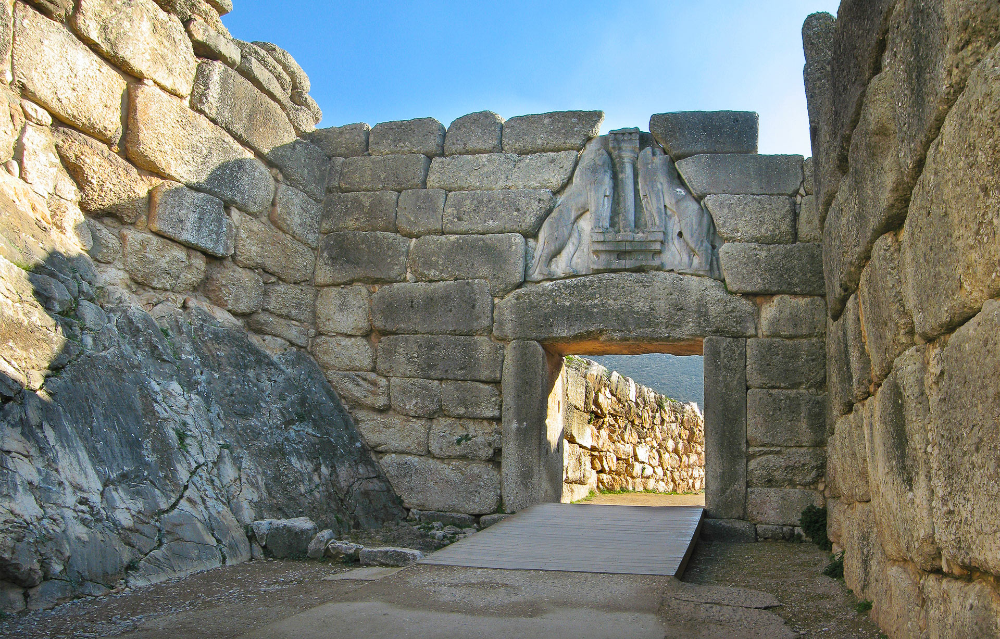
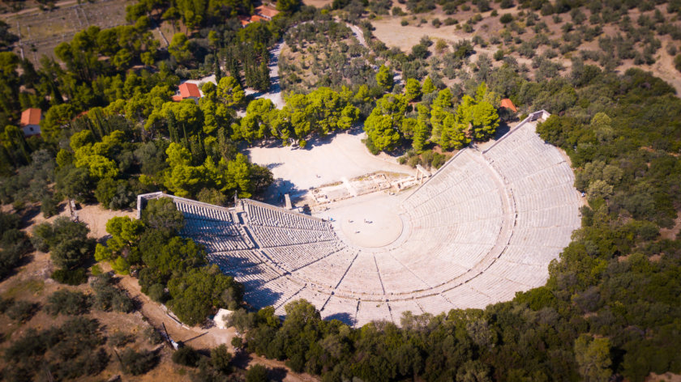
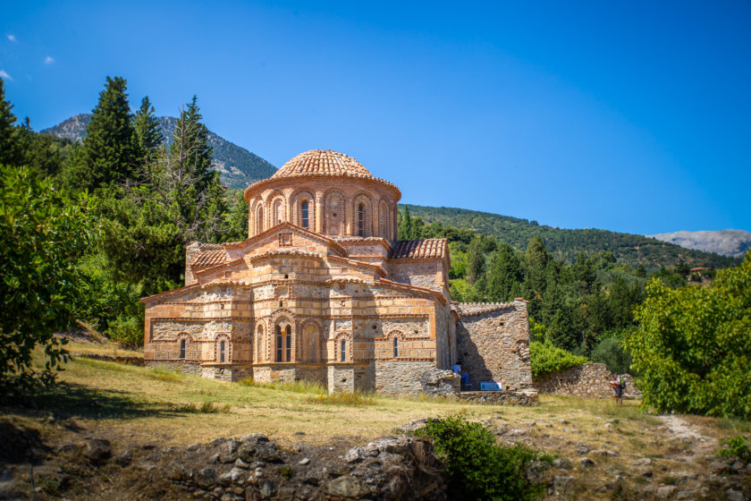
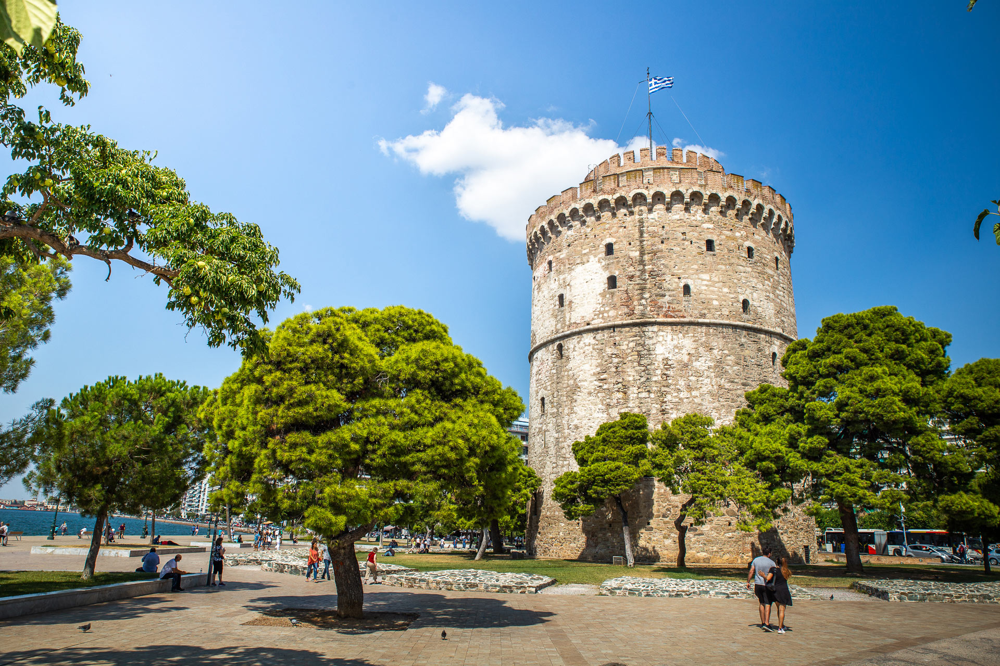
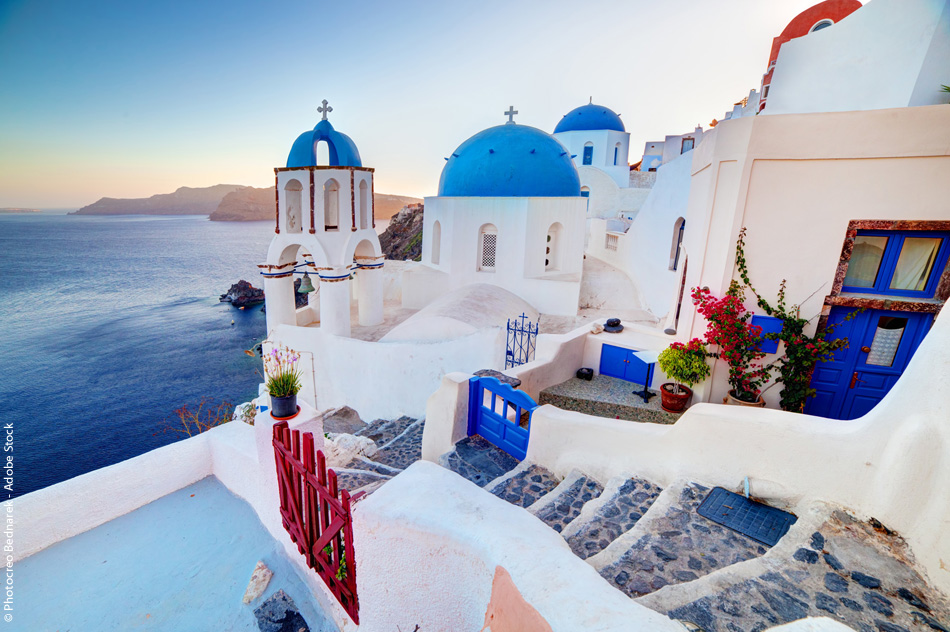
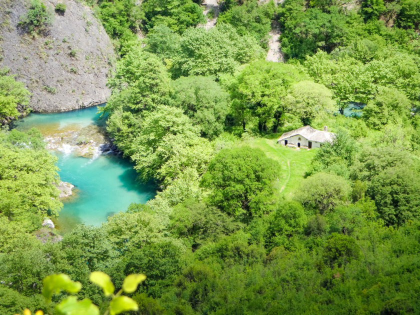

La Grèce est n'est pas qu'un conservatoire de ruine antique,
si belles soient-elles, ne se limite pas à son lointain passé prestigieux.
Elle a beaucoup à proposer à qui sait sortir des sentiers battus.
Autrement dit, il serait dommage de se limiter à un circuit un peu plus classique,
Au cours des quelques semaines que j'ai passé là-bas,
j'ai expérimeté une ville dynamique, je
vous en donne mes coups de cœur.
Suite à mon séjour en Grèce . Et je suis
tombé sous le charme de ce pays et de la façon de vivre et de ses habitants.
Un pays surnommé "le berceau de la civilisation occidentale". Venons-en au centre du sujet : Que visiter en Grèce ? Je vais
vous présenter une liste non exhaustive de ce qu’il faudrait voir lors de
votre voyage dans les villes grecques qui reçoit de plus en plus de visiteurs par an.
Découvrez les lieux mytiques,
les plats typiques de Grèce pour vous satisfaire tout au
long de l'année.
Grèce
ITINÉRAIRE MONT-ROYAL ¤ SAINTE CATHERINE ¤ PLACE DES ARTS
Les lieux à ne pas manquer ↬
Athènes, Le Péloponnèse, le Parc Mont-Royal, la rue Sainte-Catherine et le Village, la Place des Arts, l’université McGill et le Musée Redpath, la Place d'Armes, le Marché Jean-Talon, pour finir une petite ballade à vélo...
Athènes
Athènes, Ville millénaire, l’une des plus anciennes au monde, Athènes se révèle surprenante. Avec ces
monuments antiques, au milieu de la ville moderne, elle comblera autant les amateurs d’histoire et de mythologie
que les gens préférant une atmosphère urbaine et moderne.
Si vous visitez la Grèce ou même les îles Grecques, il y a de fortes chances que vous atterrissiez ou repartiez d’Athènes.
Profitez-en pour y passer 2 jours , c’est une ville incontournable d’un séjour en Grèce.
Les lieux d’intérêts à visiter à Athènes:
L’Acropole: site antique majeur et emblématique, c’est le plus visité de la ville. Vous pourrez notamment y admirer le Parthénon,
le plus grand temple dorique de Grèce, bâti en hommage à Athéna Parthénos, une déesse représentant la puissance de la ville.
Le musée de l’Acropole, à faire absolument pour comprendre l’histoire de l’Acropole et admirer tous ses trésors.
L’Agora Antique: centre politique, social et administratif de l’Athènes antique.
Le musée national archéologique et sa collection d’antiquités grecques allant du néolithique à la période classique
Le stade des PanathénéesLe stade des Panathénées construit au IV ème siècle et restauré en 1895 afin d’accueillir les premiers Jeux Olympiques
Le jardin national,Le jardin national, poumon vert de la capitale. Idéal pour profiter d’un peu d’ombre.
La place SyntagmaLa place Syntagma où se trouve le Parlement et où vous pourrez assister toutes les heures à la relève de la garde
Le quartier de MonastirakiLe quartier de Monastiraki, célèbre pour son marché aux puces du dimanche et ses nombreux magasins de souvenirs
La colline de LycabetteLa colline de Lycabette. Le sommet, accessible à pied ou en funiculaire, vous garantie une vue imprenable sur l’Acropole et tout Athènes
La rue Ermou, pour les amateurs de shopping.
Le Péloponnèse

Le Péloponnèse regorge de sites historiques et de vestiges à visiter,
issus des nombreuses civilisations qui s’y sont succédées au fil des siècles.
Les lieux à ne pas manquer dans le Péloponnèse:
Le canal de Corinthe:creusé artificiellement dans la roche, ce canal, long de 6 km, relie la mer Ionienne à la mer Egée et permet aux bateaux d’éviter un détour de 400 km.
Il sépare le Péloponnèse de la Grèce Continentale. A voir pour la photo souvenir.
La route des vins de Némée:au Sud de Corinthe, la région produit des vins rouges, réputés parmi les meilleurs de Grèce.
Nauplie:jolie ville en bord de mer surmontée de 3 forteresses. Je vous conseille la visite de la forteresse de Palamède, située sur une colline surplombant la ville.
Le site est vraiment grand et bien aménagé. Il offre de nombreux points de vue sur la mer et Nauplie. Ça a été une très bonne surprise lors de mon itinéraire en Grèce.
Les gorges de Vouraikos:le meilleur moyen de les découvrir et le plus spectaculaire est d’emprunter le train à crémaillère qui fait le trajet tous les jours entre Diakofto et Kalavryta.
La région du Magne:encore épargnée par le tourisme de masse, elle est plus rurale et assez sauvage. Parcourir ses routes en voiture vous permettra de profiter de splendides points de vues.
L’île d’Elafonissos: tout au Sud du Péloponnèse, vous y trouverez l’une des plus belles plages de Grèce: la plage de Simos.
Mycènes
Classée au patrimoine mondiale de l’UNESCO, Mycènes est l’un des plus anciens sites de Grèce. Édifiée sur une
colline, la cité antique est surtout connue pour avoir abrité en ses murs, le légendaire Agamemnon. Érigé en héros
suite à sa victoire lors de la guerre de Troie, Agamemnon était considéré comme l’un des rois les plus puissants de Grèce.
Sur le site, vous pourrez notamment découvrir le mur d’enceinte, le palais royal et les cercles des tombes où ont été trouvés de nombreux objets en or et du mobilier funéraire.
Vous pouvez aussi faire un tour par le musée archéologique de Mycènes pour en apprendre plus sur la civilisation mycénienne et cette époque qui a marqué l’histoire de la Grèce.
Epidaure
Deuxième site archéologique majeur du Péloponnèse et de la région de l’Argolide avec Mycènes, il est lui aussi classé au patrimoine mondial de l’UNESCO.
Le lieu est surtout réputé pour son théâtre antique construit au IV ème siècle avant JC. Incroyablement bien conservé, le théâtre d’Epidaure pouvait accueillir jusqu’à 14 000 personnes.
Possédant une très bonne acoustique, il est encore utilisé de nos jours pour des représentations théâtrales de pièces antiques lors du Festival d’Epidaure (en juillet-août).
L’ensemble du sanctuaire comprend également un temple dédié à Asclepios ( dieu de la médecine), la tholos (un bâtiment circulaire), le stade et
un petit musée archéologique où sont exposées quelques statues découvertes sur le site et dans les environs.
Mystra
Le site, l’un des plus beaux du Péloponnèse, se situe à une dizaine de kilomètres de Sparte, sur les pentes du massif du Taygète.
Classée au patrimoine mondial de l’UNESCO, Mystra fut l’une des capitales de l’Empire Byzantin et un haut lieu culturel. Pas épargnée par le temps et les drames, la cité fut longtemps laissée à l’état de ruines.
Aujourd’hui, après d’importants travaux de restauration (encore en cours), l’ensemble vaut vraiment une visite.
Vous pourrez notamment admirer la forteresse et le Kastro ainsi que de nombreuses églises et monastères dans un très bel environnement.
Thessalonique
Du fait de sa position, au Nord de la Grèce, Thessalonique est moins touristique que certains autres endroits mais c’est tout de même la 2 ème plus grande ville du pays.
Quoi faire et voir à Thessalonique, en Grèce:
La Tour Blanche: ancienne prison et lieu de torture, c’est le monument emblématique de la ville.
Le front de mer où se trouve de nombreux bars et restaurants.
Le marché Modiano pour faire le plein de produits locaux.
La rotonde et l’arc de Galère, 2 monuments romains.
Le musée archéologique et sa collection de vestiges mis à jour en Macédoine grecque ( à ne pas confondre avec la République de Macédoine).
Aller voir les nombreuses églises: Agios Pavlos, Agios Dimitrios, Agia Sofia, Agios Nikolaos Orfanos, Ossios David.
La citadelle et les remparts de la ville haute, lieu prisé au coucher du soleil.
La Via Egnatia pour faire du shopping
Visiter un porte hélicoptère et/ou un sous marin de la marine Grecque, si vous avez la chance qu’ils soient à quai lors de votre séjour.
Les Cyclades
Santorin est bien sur la plus connue, c’est vraiment l’île de rêve des Cyclades par excellence.
Tout le monde a déjà vu cette photo de l’église au dôme bleu et aux murs immaculés dominant la mer.
Mais savez-vous qu’il y en fait 24 îles habitées dans l’archipel des Cyclades ? De quoi en prendre plein les yeux !
Petit tour d’horizon des îles des Cyclades:
Santorin:l’île romantique où des milliers de personnes viennent admirer le superbe coucher de soleil tous les jours.
Mykonospour faire la fête toutes les nuits au son des meilleurs Dj du monde.
Amorgos où s’est tourné le film « Le grand bleu » avec Jean Reno, super destination pour la randonnée!
Naxos,la plus grande île des Cyclades, qui possède plusieurs jolies plages.
Paros où vous pourrez visiter de charmants villages et profiter de belles plages.
Andros et ses nombreux chemins de randonnée pour sillonner l’île.
Délos et ses sites antiques.
Tinos et ses villages perdus dans la montagne.
Les gorges de Vikos
Les gorges de Vikos font partie des lieux d’intérêts à voir en Grèce. Si vous aimez la randonnée, c’est une super destination.
Elles se trouvent dans la région des Zagoria, au Nord Ouest de la Grèce, à environ 2h30 de route des Météores.
Avec près de 900 mètres de profondeur et 12 km de long, les Gorges sont parmi les plus profondes du monde. De part leur étroitesse elles sont vraiment très impressionnantes.
Plusieurs sentiers de randonnées et itinéraires sont possibles pour aller les admirer et s’y balader. Dans tout les cas, soyez bien équipés: chaussures de randonnée,
bouteilles d’eau, crème solaire et chapeau sont de rigueur! Je vous recommande aussi de signaler à l’avance à votre hôtel votre parcours en cas de problème.
La randonnée la « plus classique », environ 12 km, part du village de Monodendri et rejoint celui de Vikos.
Mais vous avez aussi la possibilité d’en faire de moins longues et même d’emprunter votre voiture pour vous rapprocher de certains points de vue. Celui d’Oxia par exemple, vaut le coup d’oeil !
Les plages de Grèce

Où partir en Grèce pour profiter de belles plages ?
Pour l’été, le Canal Lachine : on peut y louer des vélos et pédaler le long du
canal depuis le Vieux Port jusqu’à l’île René-Levesque, avec un point de vue
magnifique sur le Lac Saint-Louis qui borde l’île de Montréal. C’est vraiment
dépaysant de se retrouver face à cet immense lac alors que moins d’une heure avant
on était en plein centre de Montréal. Et pour compléter la journée, on peut marcher
jusqu’à l’oratoire Saint-Joseph pour observer le coucher de soleil depuis en haut.
Ce que vous devez gouter ↬
le sandwich à la viande fumée, les gnocchi, les bagels, les glaces, la poutine, les patates à l'ail, les jus ...
Schwartz's Deli Smoke Meat

Schwartz est peut-être l’élément le plus célèbre de la scène gastronomique montréalaise. Les files d'attente pour cette épicerie emblématique du boulevard St Laurent peuvent être plus longue que quelques pâtés de maisons chaque jour, mais l'attente n'est généralement pas trop longue compte tenu de son expérience culinaire sans fioritures. Le plat principal ici est un sandwich à la viande fumée classique avec des frites, un cornichon et un soda à la cerise noire. Le Schwartz's a une ambiance rétro, et la charcuterie possède une histoire de 80 ans, reconnue par les célébrités, comme un point de repère bien-aimé de la ville.
Les Gnocchi chez Drogheria Fine

Grâce à son emplacement minuscule et sans prétention sur Fairmont, il est facile
d'oublier cette authentique boutique italienne. Mais elle est connu pour faire l'une
des meilleures sauces pour pâtes de Montréal.
Une sauce que vous pouvez acheter au pot - ou encore mieux, dans un petit carton de
5$ de gnocchi frais qui bouillonne dans une cuve près de la seule fenêtre de la boutique.
Ajoutez du parmesan et du poivre broyé et savourez ce plat italien réconfortant bien
chaud en vous promenant dans le cœur animé du quartier du Mile End.
L'Original Faimount Bagel

Situé juste à côté de Drogheria Fine, vous trouverez Fairmont Bagel, la moitié des rivalités alimentaires les plus anciennes à Montréal. Bien sûr, les bagels de style montréalais sont un incontournable pendant que vous êtes en ville, meilleurs lorsqu'ils sont encore chauds. L'endroit est confortable et n'a rien d'extraordinaire; les murs sont tapissés de bagels ensachés, et derrière le comptoir, vous pouvez regarder les bagels cuits frais dans un grand poêle à bois.
Boulangerie St Viateur Bagel

Vous voudrez également essayer le concurrent de la rivalité des bagels à la montréalaise en vous rendant à la boutique de bagels de St Viateur à proximité et décider par vous-même des bagels frais roulés à la main que vous préférez. la boulangerie est ouveret 24h/24.
Les glaces chez Kem CoBa

À deux pas du Fairmont Bagels et de Drogheria Fine, Kem CoBa a souvent des files d'attente qui s'étendent le long du pâté de maisons et au coin de la rue pendant les mois de printemps et d'été. La plupart des gens viennent pour une tasse ou un cornet de glace ou de sorbet artisanal, mais il propose également du chocolat et des pâtisseries. Les desserts glacés ne contiennent ni conservateurs ni ingrédients artificiels, et vous pouvez choisir des desserts en cuillère ou en cornet dans des saveurs créatives et maison.
Les glaces chez Ripples

Situé sur le boulevard St Laurent, aussi appelé «The Main», le magasin de crème glacée Ripples existe depuis plus de 15 ans. Le propriétaire Richard Bernett a commencé par fabriquer de la crème glacée à la maison et est tombé amoureux de l'artisanat, et maintenant sa petite boutique propose de la crème glacée, du sorbet et du yogourt glacé dans plus de 30 saveurs - y compris goyave-pamplemousse, halavah, fudge moka-amande et thé chai.
La Poutine à la Banquise

Malgré sa combinaison lourde de frites, de sauce et de fromage, la poutine est reconnue comme l'un des plats québécois les plus emblématiques. Il existe de nombreuses chaînes qui servent ce classique de la restauration rapide locale, mais La Banquise sur le Plateau est l'un des endroits les plus populaires de la ville. Depuis 1968, ce snack-bar sert plus de 30 sortes de poutine 24h/24. Les variétés incluent La Mexicaine, La Reggae, La Santorini, La Sud-Ouest et La Véganomane, avec du fromage végétalien et une sauce végétalienne.
La Poutine fois gras Au Pied de Cochon

Faites passer votre amour pour la poutine au niveau supérieur et essayez une variante de foie gras dans l’un des restaurants les plus célèbres du quartier du Plateau à Montréal. Au Pied du Cochon est connu pour ses interprétations lourdes et décadentes des plats traditionnels québécois, et sa poutine au foie gras ne fait pas exception. Le fromage en grains et les frites sont recouverts d'une généreuse portion de sauce au foie gras, et garnis d'une pincée supplémentaire du délicieux pâté. Vous n’aurez plus de place pour le dessert.
Pommes de terre à l'ail chez Boustan

Depuis 1986, Boustan sert de la restauration rapide libano-canadienne la plus populaire de la ville. L'emplacement d'origine de la rue Crescent a attiré des célébrités canadiennes telles que Leonard Cohen, l'ancien premier ministre Pierre Trudeau et son fils, l'actuel premier ministre Justin Trudeau et des joueurs de l'équipe de hockey des Canadiens de Montréal - entre autres. Il y a maintenant plusieurs endroits, mais les pommes de terre servies avec une sauce épaisse à l'ail restent un plat réconfortant local favoris.
Jus au Gibeau Orange Julep

Facilement identifiable comme l'orange géante sur les toits de Montréal, Gibeau Orange Julep a une longue histoire qui couvre plusieurs décennies. Elle incarne l'ambiance d'un dîner des années 1960 et attire des voitures classiques de près et de loin pour des rassemblements hebdomadaires dans le parking environnant. La boisson classique du lieu est le Gibeau Orange Julep crémeux, parfait pour savourer un après-midi d'été chaud avec un hot-dog et des frites.
En dehors de Montreal
Et si vous decidez de mettre les pieds hors de Montréal, il y a encore tout plein de bonnes chose à découvrir, comme la tire sur la neige que vous retrouver souvent dans les cabannes à sucre. Une expérience à découvrir et à faire soi-même.
Vous l’avez compris, Montréal regorge d’endroits où se rendre, où il faut se balader. Cette ville est marquante, de par sa cosmopolité mais aussi de par son identité unique. Ne vous étonnez pas si vous tombez sous le charme très rapidement. Bon voyage dans la métropole québécoise !
Vous rêvez de partir à Montréal, contactez-moi pour en discuter :